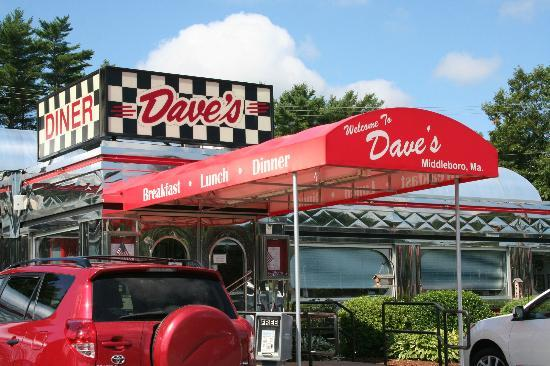

Welcome to Star!
Grow and Connect
As a business owner or director of an organization, you understand the difficulty in promoting your business or organization. The Star Chamber of Commerce is dedicated to helping promote business and economic growth in the Star area and beyond. Let us become a part of what you're doing in the community by joining the Star Chamber of Commerce today!
Spotlight Events
Join us for our annual 4th of July parade! Main street will be closed so our local businesses and community members can put on the famous parade. Beginning at 10am the streets will be lined with our local friends and families. Want to advertise your business or organization in the parade? Follow this link for more details.
Local Weather
Temperature: 74°F
Skies: Partly Cloudy
Forcast: Expect some cool wind and light showers this evening. Tomorrow will be just like today.
Business of the Month
This month Dave and Sue's Diner won in all our categories for Business of the Month. Julia, a long time employee, noted, "Working here has given me such a good opportunity to interact with the good people of Star. I can honestly say, working here doesn't feel like work." With the highest rating of google reviews, it's no wonder it was voted as Best Restaurant in Star in 2022. If you're looking for good food and happy people, Dave and Sue's Diner is the place. Look for them on Main street. 326 W Main St Star, Idaho 83669
